Monitoreo activo en tiempo real
Vigilancia de tiempo peligroso para todo el Caribe
Análisis y vigilancia de fenómenos peligrosos en el Caribe, Centroamérica, México y Estados Unidos. Información clara y confiable para que te mantengas protegido ante eventos extremos.
- Cobertura
- 12+ países
- Vigilancia
- 24 · 7
- Fuentes
- NHC · NWS · NOAA
Datos de fuentes oficiales
Nuestra misión
Traducimos datos técnicos
en decisiones reales
Brindamos información clara y precisa sobre tiempo peligroso y fenómenos naturales extremos en los países del Caribe y América, priorizando la seguridad pública y la prevención de riesgos.
-
Datos meteorológicos de calidad
Recopilamos de fuentes oficiales como NHC, NWS, SMN, INSIVUMEH e INDOMET, entre otras.
-
Análisis de fenómenos peligrosos
Evaluamos riesgos meteorológicos severos con modelos actualizados y monitoreo constante.
-
Información confiable y simple
Traducimos datos técnicos en información comprensible para el público general.
-
Vigilancia e informaciones oportunas
Publicamos avisos en la web, en redes sociales y en nuestras comunidades.
Cobertura de fenómenos
Cuatro regiones de vigilancia
Cada región tiene su propia sala de monitoreo y su propia comunidad. Sigue la que te afecta.
-
Fenómenos México Información actualizada sobre todos los fenómenos significativos en México, así como sus impactos y riesgos asociados. Redes sociales -
Fenómenos del Caribe Información actualizada sobre todos los fenómenos significativos para la región del Caribe, así como sus impactos y riesgos asociados. Cubrimos República Dominicana, Cuba, Puerto Rico, entre otros. Redes sociales -
Fenómenos Centroamérica Información actualizada sobre todos los fenómenos significativos para la región de Centroamérica, así como sus impactos y riesgos asociados. Cubrimos Guatemala, El Salvador, Honduras, Nicaragua, entre otros. Redes sociales -
Fenómenos USA Información actualizada sobre todos los fenómenos significativos para la región de Estados Unidos, así como sus impactos y riesgos asociados. Redes sociales
+2 páginas especializadas
-

Huracanes Caribe Información actualizada sobre ciclones tropicales en el Caribe y todo el Atlántico, así como sus impactos y riesgos asociados. Redes sociales -
Terremotos Caribe Monitoreo sísmico, alertas y análisis de actividad tectónica relevante en la región. Redes sociales
Qué recibes
Vigilancia diseñada
para tu localidad
Nuestros principales servicios de monitoreo y análisis del tiempo, sin tecnicismos innecesarios.
-
Alertas localizadas
Avisos adaptados a tu país y a tu región específica.
-
Mapas de riesgos
Lluvia, viento, tormentas y ciclones según el área.
-
Seguimiento continuo
Actualizaciones durante eventos activos y situaciones críticas.
-
Análisis simplificado
Información clara, sin tecnicismos innecesarios.
Cobertura regional
Personalizada por país
El Caribe, Centroamérica, México y Estados Unidos — y seguimos creciendo.
- 🇩🇴República Dominicana
- 🇵🇷Puerto Rico
- 🇨🇺Cuba
- 🇲🇽México
- 🇺🇸Estados Unidos
- 🇬🇹Guatemala
- 🇭🇳Honduras
- 🇧🇿Belice
- 🇸🇻El Salvador
- 🇳🇮Nicaragua
- 🇨🇷Costa Rica
- 🇵🇦Panamá
- ❇️Entre otros
En vivo
Actividad en Fenómenos
del Caribe media
Monitoreo y conversación en tiempo real. Miles de personas siguiendo el mismo cielo, en el mismo lugar.
Nuestras comunidades
Últimos artículos
Aprende antes del evento
Análisis, guías y contenido educativo sobre fenómenos meteorológicos y riesgos naturales en la región.
Estamos preparando nuestras primeras publicaciones.
Recibe alertas en tiempo real
No dejes que el tiempo te tome por sorpresa. Únete a nuestra comunidad de usuarios responsables y mantente informado sobre condiciones peligrosas.
Solo avisos meteorológicos. Puedes darte de baja cuando quieras.